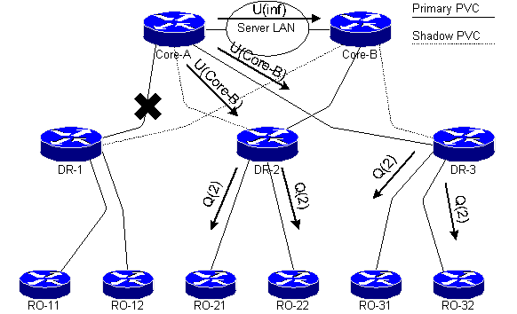

The exercise is part of convergence scenario in a large hierarchical network shown below:

Network has almost converged and Core-A has already selected Core-B as its successor, resulting in update packets sent to DR routers and poison update sent to Core-B.
Compute the EIGRP metric that Core-A reports to DR routers for RO-11 and DR-1 LAN. Compute the EIGRP metric for these destinations on DR-2 and DR-3 and verify that they select the paths over primary PVCs.
To compute the metrics, you need delay and bandwidth parameters of all (sub)interface in the network. These parameters are specified at the beginning of Case Study #2 in Chapter 5 and are summarized in the table below for your convenience.
| Link | Bandwidth | Delay |
|---|---|---|
| RO to DR | 64 kbps | 20000 msec |
| Primary PVC DR to Core | 512 kbps | 10000 msec |
| Shadow PVC DR to Core | 256 kbps | 40000 msec |
| Server LAN (Token Ring) | 16 Mbps | 630 msec |
| all LAN interfaces | 10 Mbps | 1000 msec |
Core-A has already selected Core-B as its successor. The distance of RO-11 LAN and DR-1 LAN on Core-A is thus
| Destination | Minimum Bandwidth | Total Delay |
|---|---|---|
| RO-11 LAN | 64 kbps | 61630 |
| DR-1 LAN | 256 kbps | 41630 |
Core-B has already reported its distance to the same destinations in Step #6 of the convergence scenario. The distance reported by Core-B is:
| Destination | Minimum Bandwidth | Total Delay |
|---|---|---|
| RO-11 LAN | 64 kbps | 61000 |
| DR-1 LAN | 256 kbps | 41000 |
DR-2 receives update from Core-A over shadow PVC and keeps its current successor (Core-B) which is reachable over primary PVC. DR-3 receives updates from Core-A over primary PVC resulting in the following EIGRP topology table on DR-3:
| Destination | Reported by Core | Distance on DR-3 | ||
|---|---|---|---|---|
| Bandwidth | Delay | Bandwidth | Delay | |
| RO-11 LAN over Core-A | 64 kbps | 61000 | 64 kbps | 101000 |
| DR-1 LAN over Core-A | 256 kbps | 41000 | 256 kbps | 81000 |
| RO-11 LAN over Core-B | 64 kbps | 61630 | 64 kbps | 81630 |
| DR-1 LAN over Core-B | 256 kbps | 41630 | 256 kbps | 61630 |
Based on the contents of its EIGRP topology table, DR-3 selects Core-B (reachable over primary PVC) as its successor for all destinations under discussion.
LAN subnets on DR-1 and RO-11 are thus reachable over primary PVC from DR-2 and DR-3.